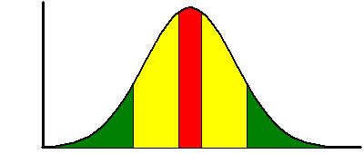

我在之前一篇文章《怎么样丰富和管理个人知识库》的一开始提到过：对于每个人来说，对自己有用的信息其实就可以被称作为知识，而知识就应该被收集和管理起来。在此文里介绍了什么是知识，知识如何收集以及知识库如何管理。其实知识管理是一个很大的话题，绝不是三言两语就能够说得清楚的，今天我们就再来探讨探讨这个话题，这一次我们从知识领域、知识体系和知识点三个方面入手。
知识领域
按照传统的习惯，通常会把知识归类到不同的领域，比如：文学、数学、计算机、烹调等等。
有些领域是另一个领域的一部分。比如说「信息安全」，其实是「IT」这个领域的一个分支领域。这类关系比较好理解，套用数学中集合论的说法，就是「某个领域是另一个领域的子集」。
还有一种稍微复杂一点的包含关系,某个领域同时被其它多个领域所包含。对这种关系，可以大致理解为「多个集合的交集」。比如「量子信息学」，可以大致看成是信息学和量子力学的交集。
有些领域需要另一个领域的知识进行辅助。 比如，很多学科都用到 CAD（计算机辅助设计），这就是领域之间「辅助关系」的例子。 如果某个领域为很多其它的领域提供辅助，那么这种领域常称之为「基础性领域」。比如在自然科学中，数学往往是基础性领域。
我们还经常会提到知识的广度和深度，所谓的「广度」，就是指你的知识结构中，包含了多少领域；所谓的「深度」，就是你对具体的每一个领域是否具有深入的了解和研究。
深度的重要性，大伙儿应该都明白。如果某人的知识结构只有广度而没有深度，就会导致其个人能力没有突出的亮点，这种人往往没有太强的竞争力。
和深度相反，广度的重要性，很多人都没有意识到。如今是信息时代，不同领域之间的关联越来越密切。这时候，广度的重要性就体现出来了。 就拿我这种有事没事写写文章的所谓个人自媒体来说吧：
如果你想把界面和排版搞得好一点，你还需要懂一点「HTML、CSS、JS」的知识；
如果你想提高文章在搜索引擎的排名，你还需要懂一点「SEO（搜索引擎优化）」的知识；
如果你想使用 WordPress 这类功能最强大的博客平台，你还需要懂一点「PHP编程」的知识；
......（这个清单还可以继续列下去）
你看，即使是写写文章这么简单的一桩小事，牵涉的领域也不少。所以，想要在某个领域做到足够深入，必然要了解很多相关的辅助性领域的知识。
顺便再聊聊文理科之间的相互鄙视。 很多文科出身的人看不起理工科；反之，很多理工科出身的人看不起文科。为什么会导致这种现象？很多时候是因为不了解。不了解导致偏见，偏见导致鄙视，鄙视之后就更加不去了解。如此往复，变成恶性循环。 其实捏，人文学科、社会科学、自然科学这三块，有很多相通之处，也有很多互相借鉴之处。
虽然深度和广度都很重要，但每个人的时间、精力、天赋都是有限的，你不可能在所需要的每个领域都做到足够深入。那么如何平衡这两者呢？我们的观点是：借鉴正态分布。

（这幅图中，横坐标表示不同的领域，纵坐标表示你在该领域的深度）
尖峰的顶点周围（红色部分）对应的就是你的主攻领域。你需要在这个领域做到足够的深入（越深入越好）。和主攻方向的关系比较密切的领域（黄色部分），你需要比较深入，但深入的程度不需要跟主攻方向一样。和主攻方向关系比较疏远的领域（绿色部分），只需浅尝即止。
如果你运气比较好，自己的工作正好就是自己的兴趣所在，那毫无疑问，这就是你的主攻方向。万一你的兴趣和工作不一致，怎么办？我们的建议是，以自己的兴趣作为主攻方向。然后把工作仅仅当作是谋生手段。当你对某个领域有真正的兴趣，你自然就会有：足够的热情，足够的动力，足够的耐心，足够的持久性。有了这几点，自然就能在该领域达到足够的深度。抛开功利因素不谈，如果你能在自己喜欢的领域达到足够的深度，这本身就能带来非常多的快乐（而且这种快乐往往是金钱无法换来的）。
知识体系
前面说了，领域之间可能会有包含关系。而且，大部分领域都有不止一个分支领域。除了包含若干分支领域，每个领域都会包含很多「主题」。以「信息安全」这个领域为例，「如何防止黑客入侵」就是一个主题。
假如把某个领域想象成一棵树，那么分支领域就如同树枝（树枝上还可以再有树枝），而主题如同树叶。这就是所谓的该领域的「知识树」。如果某个领域是你的主攻方向，那么，你必须能在头脑中清晰地勾勒出该领域的知识树。做到这一点，你对该领域才算有「广度」上的认识。
关于勾勒知识树，不同的人对同一个领域勾勒知识树，得到的形态可能会不同。 比如说对「文学」这个领域：有的人先按照「国别」细分，再按照「体裁」细分；有的人反过来，先按照「体裁」细分，再根据「国别」细分。你很难说，哪一种是对的。也很难说哪一种更好。只要适合自己的就是好的。
「主题」通常是以「疑问句」的形式出现的。大部分主题通常可以归为三类：WHAT型、HOW型、WHY型。
以密码学为例：
「RSA加密算法有什么优缺点？」--这是WHAT型的主题
「RSA加密算法内部是怎么实现的？」--这是HOW型的主题
「RSA加密算法为什么要这样实现？」——这是WHY型的主题
说到这三个分类，你可能会意识到如下两点：
1. WHAT型问题 通常是比较肤浅的、表象的；而WHY型问题 通常是比较深刻的 、本质的。
2. 大部分WHAT型问题，通常有标准答案；而相当多的 WHY型问题 是没有标准答案的（HOW型的问题介于两者之间）。
所以，如果你想在某个领域做到比较深入，你一定要多探寻 WHY型 的问题。对这类问题的思考，要避免拷贝别人现成的答案，要通独立思考得出自己的答案。这类问题思考多了，无形中就对该领域有更多更深入的了解。
知识点
想深入的了解某个主题，一般要掌握许多「知识点」。所谓的「知识点」，通常表示某个有价值的信息。为什么要强调「有价值」这个定语？因为世间的信息有千千万万，绝大部分都是没有价值，不能算是「知识点」。
知识点有很多种类型，常见的有如下几种：
有些知识点是概念性的，用来表示某种「定义」
有些知识点是指导性的，用来表示某种「方法」
有些知识点是陈述性的，用来表示某种「事实」
第一类显然是很重要的。 不论是哪个领域，基本的概念和定义总是很关键的（犹如建筑的地基）。如果你对这些东西的理解有误或有偏差，就如同是「浮沙之上筑高台」。
第二类也很重要。 一句老话叫做「授人以鱼不如授人以渔」。这话说的就是方法论的重要性。
至于第三类，其实远远不如头两类重要。为了给大伙儿加深印象，说一个爱因斯坦的典故。 爱因斯坦刚移民到美国的时候，已经是全球性的名人，经常受到记者的围堵。有一次，某记者问他，音速的大小是多少？老爱回答不知道。记者表示很诧异。然后老爱说了一段话，其中两句是：这些可以在书上查到的东西，我没有记在脑子里。可见教育的价值在于训练思维，而不在于传授事实。 后面这一句话说得尤其好。
顺便提一提什么是洗脑教育。洗脑教育最常用的手段就是「灌输」。简而言之就是：迫使你被动地、无条件地接受一堆「事实」。在灌输的过程中，学生唯一要做的就是动用「记忆力」，把老师所说的「事实」背下来。被长期灌输的学生，除了记忆力比较好，其它思维能力（比如：分析、推理、归纳、总结、联想、创造、等等）很少得到训练。很多人有一个误区，以为「洗脑」的关键是「欺骗」。其实不然。洗脑的关键是「扼杀思维能力」。
说完洗脑，再说说如何应对「知识爆炸」。这个词汇很多人都听说过。如今是信息时代，每个学科的知识总量都以非常快的速度膨胀。这对人的脑力是巨大的挑战。即便是在你主攻的一个非常细的细分领域，你也不可能记住所有的知识点。怎么破？
刚才列举了三类常见的知识点：描述概念、描述方法、描述事实。头两类的比例很低，但通常都很重要。所以这两类你需要记忆。第三类的比例很大（很可能占总量的 99% 以上），这时候你需要做一些取舍，只记住核心的知识点，舍弃边缘的知识点。有的朋友会问：不记住边缘的知识点，万一今后要用，怎么办？ 其实很简单。如今的搜索引擎技术很发达，还有很多专业的文献检索工具。只要你善于利用计算机和互联网，可以到需要的时候再临时去查，不难查到。
最后还想大家都明确一点，「知识结构」仅仅是个人能力的一小部分。对提升个人能力而言，完善知识结构只是必要条件，但不是充分条件。知识是需要运用的，不善于运用，再多的知识也如同垃圾。